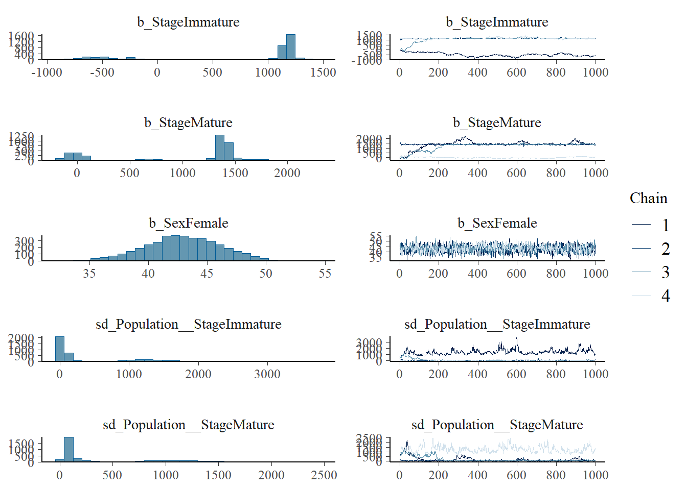

library(tidyverse)
library(rstan)
library(brms)
library(truncnorm)Warning: package 'truncnorm' was built under R version 4.4.1library(tidyverse)
library(rstan)
library(brms)
library(truncnorm)Warning: package 'truncnorm' was built under R version 4.4.1d <- read_csv("Data/LHDC.csv") |>
filter(!(Population == "Southwest Atlantic" & !is.na(OWt))) |>
transmute(
Population,
Country,
Sex,
Stage = as_factor(LS_Score),
Length = TL
)New names:
Rows: 13495 Columns: 47
── Column specification
──────────────────────────────────────────────────────── Delimiter: "," chr
(8): ID, Source, Country, Species, Cap.gear, Sex, Population, Hemisphere dbl
(39): ...1, Cap.year, LS_Score, TL, sdtl, TWgt, sdtwgt, F.Ys.Wgt, D.T.Wg...
ℹ Use `spec()` to retrieve the full column specification for this data. ℹ
Specify the column types or set `show_col_types = FALSE` to quiet this message.
• `` -> `...1`d |>
filter(Stage != 2.3) |>
group_by(Population, Stage, Sex) |>
summarise(n = n()) |>
pivot_wider(
names_from = Stage,
values_from = n
)`summarise()` has grouped output by 'Population', 'Stage'. You can override
using the `.groups` argument.# A tibble: 14 × 5
# Groups: Population [6]
Population Sex `1` `2` `3`
<chr> <chr> <int> <int> <int>
1 Australia F 890 850 596
2 Australia M 876 666 257
3 New Zealand F 41 2102 37
4 New Zealand M 36 2941 301
5 New Zealand <NA> 13 NA NA
6 Northeast Atlantic <NA> 23 NA NA
7 Northeast Atlantic F NA 82 30
8 Northeast Atlantic M NA 310 162
9 Northeast Pacific F 2 6 131
10 Northeast Pacific M 9 5 15
11 South Africa F NA 18 36
12 South Africa M NA 685 731
13 Southwest Atlantic F 255 149 320
14 Southwest Atlantic M 259 238 327da <- d |> filter(Population == "Australia")da |>
# filter(Length > 1100) |>
ggplot() +
aes(x = Length, fill = factor(Stage), group = Stage) +
geom_histogram() +
facet_grid(
rows = vars(Stage),
cols = vars(Sex),
scales = "free_y"
) +
ggtitle("Australian data")`stat_bin()` using `bins = 30`. Pick better value with `binwidth`.da |>
# filter(Length > 1100) |>
ggplot() +
aes(x = Length, fill = factor(Stage), group = Stage) +
geom_histogram(position = "stack") +
facet_grid(
cols = vars(Sex),
scales = "free_y"
) +
ggtitle("Australian data")`stat_bin()` using `bins = 30`. Pick better value with `binwidth`.
da |>
# filter(Length > 1100) |>
ggplot() +
aes(x = Length, fill = factor(Stage), group = Stage) +
geom_density(position = "stack", col = NA, bw=50) +
facet_grid(
cols = vars(Sex),
scales = "free_y"
) +
ggtitle("Australian data")
d |>
filter(Length > 1050 & Length < 1650) |>
ggplot() +
aes(x = Length, fill = factor(Stage), group = Stage) +
geom_density(alpha = .5, col = NA) +
facet_grid(
cols = vars(Sex),
rows = vars(Population),
scales = "free_y"
) 
d |>
filter(Length > 1050 & Length < 1650) |>
ggplot() +
aes(x = Length, fill = factor(Stage), group = Stage) +
geom_histogram(alpha = .5, col = NA, position = "identity") +
facet_grid(
cols = vars(Sex),
rows = vars(Population)
) `stat_bin()` using `bins = 30`. Pick better value with `binwidth`.d23 <- d |>
filter(
Length > 1050,
Length < 1650,
Population != "Northeast Pacific") |>
mutate(Sex = Sex |>
fct_recode(Male = "M", Female = "F") |>
fct_relevel("Male", "Female"),
Stage = Stage |>
fct_recode(Immature = "2", Mature = "3")
) |>
droplevels()d23 |>
ggplot() +
aes(x = Length, fill = Stage, group = Stage) +
geom_histogram(alpha = .5, col = NA, position = "identity") +
facet_grid(
cols = vars(Sex),
rows = vars(Population)
) `stat_bin()` using `bins = 30`. Pick better value with `binwidth`.glmmTMBlibrary(glmmTMB)
Attaching package: 'glmmTMB'The following object is masked from 'package:brms':
lognormalg1 <- glmmTMB(
Length ~ 0 + Stage + Sex + ( 0 + Stage | Population ),
data = d23
)
g1 |> summary() Family: gaussian ( identity )
Formula: Length ~ 0 + Stage + Sex + (0 + Stage | Population)
Data: d23
AIC BIC logLik deviance df.resid
52749.5 52794.3 -26367.7 52735.5 4462
Random effects:
Conditional model:
Groups Name Variance Std.Dev. Corr
Population StageImmature 642.4 25.35
StageMature 1827.8 42.75 0.27
Residual 7736.9 87.96
Number of obs: 4469, groups: Population, 5
Dispersion estimate for gaussian family (sigma^2): 7.74e+03
Conditional model:
Estimate Std. Error z value Pr(>|z|)
StageImmature 1179.172 11.747 100.38 <2e-16 ***
StageMature 1385.399 19.243 72.00 <2e-16 ***
SexFemale 48.743 3.217 15.15 <2e-16 ***
---
Signif. codes: 0 '***' 0.001 '**' 0.01 '*' 0.05 '.' 0.1 ' ' 1g2 <- glmmTMB(
Length ~ 0 + Stage + Sex + ( 1 | Population ),
data = d23
)
g2 |> summary() Family: gaussian ( identity )
Formula: Length ~ 0 + Stage + Sex + (1 | Population)
Data: d23
AIC BIC logLik deviance df.resid
52937.4 52969.4 -26463.7 52927.4 4464
Random effects:
Conditional model:
Groups Name Variance Std.Dev.
Population (Intercept) 1028 32.07
Residual 8105 90.03
Number of obs: 4469, groups: Population, 5
Dispersion estimate for gaussian family (sigma^2): 8.1e+03
Conditional model:
Estimate Std. Error z value Pr(>|z|)
StageImmature 1175.658 14.589 80.59 <2e-16 ***
StageMature 1381.213 14.500 95.25 <2e-16 ***
SexFemale 43.658 3.269 13.36 <2e-16 ***
---
Signif. codes: 0 '***' 0.001 '**' 0.01 '*' 0.05 '.' 0.1 ' ' 1brmsm1 <- brm(
Length ~ 0 + Stage + Sex + ( 0 + Stage | Population ),
data = d23,
chains = 4,
cores = 4,
control = list(adapt_delta = 0.99)
)Compiling Stan program...Start samplingWarning: There were 3 divergent transitions after warmup. See
https://mc-stan.org/misc/warnings.html#divergent-transitions-after-warmup
to find out why this is a problem and how to eliminate them.Warning: There were 3741 transitions after warmup that exceeded the maximum treedepth. Increase max_treedepth above 10. See
https://mc-stan.org/misc/warnings.html#maximum-treedepth-exceededWarning: Examine the pairs() plot to diagnose sampling problemsWarning: The largest R-hat is 1.67, indicating chains have not mixed.
Running the chains for more iterations may help. See
https://mc-stan.org/misc/warnings.html#r-hatWarning: Bulk Effective Samples Size (ESS) is too low, indicating posterior means and medians may be unreliable.
Running the chains for more iterations may help. See
https://mc-stan.org/misc/warnings.html#bulk-essWarning: Tail Effective Samples Size (ESS) is too low, indicating posterior variances and tail quantiles may be unreliable.
Running the chains for more iterations may help. See
https://mc-stan.org/misc/warnings.html#tail-essm2 <- brm(
Length ~ 0 + Stage + Sex + ( 1 | Population ),
data = d23,
chains = 4,
cores = 4,
control = list(adapt_delta = 0.99)
)Compiling Stan program...Start samplingWarning: There were 2136 transitions after warmup that exceeded the maximum treedepth. Increase max_treedepth above 10. See
https://mc-stan.org/misc/warnings.html#maximum-treedepth-exceededWarning: Examine the pairs() plot to diagnose sampling problemsWarning: The largest R-hat is 1.67, indicating chains have not mixed.
Running the chains for more iterations may help. See
https://mc-stan.org/misc/warnings.html#r-hatWarning: Bulk Effective Samples Size (ESS) is too low, indicating posterior means and medians may be unreliable.
Running the chains for more iterations may help. See
https://mc-stan.org/misc/warnings.html#bulk-essWarning: Tail Effective Samples Size (ESS) is too low, indicating posterior variances and tail quantiles may be unreliable.
Running the chains for more iterations may help. See
https://mc-stan.org/misc/warnings.html#tail-essm1 <- add_criterion(m1, "loo")
m2 <- add_criterion(m2, "loo")loo_compare(m1, m2) elpd_diff se_diff
m1 0.0 0.0
m2 -97.9 14.0 saveRDS(m1, "m1.rds")
saveRDS(m2, "m2.rds")
# m1 <- readRDS("m1.rds")
# m2 <- readRDS("m2.rds")ranef(m1)$Population
, , StageImmature
Estimate Est.Error Q2.5 Q97.5
Australia 487.3116 726.6589 -49.94781 1931.623
New Zealand 424.1834 726.2489 -112.51788 1869.163
Northeast Atlantic 419.0098 725.7942 -115.90099 1861.266
South Africa 459.6123 726.5435 -77.92752 1903.241
Southwest Atlantic 414.3817 726.2315 -119.55086 1855.413
, , StageMature
Estimate Est.Error Q2.5 Q97.5
Australia 431.5946 649.7626 -342.3248 1535.880
New Zealand 451.1430 649.9717 -318.4485 1555.891
Northeast Atlantic 400.3724 649.4536 -370.7707 1506.154
South Africa 403.9123 649.6889 -362.8677 1509.307
Southwest Atlantic 318.9298 649.6375 -453.0950 1424.080plot(m1)
library(marginaleffects)# pred <- predictions(m1, newdata = datagrid(FUN_factor = unique))d23m <- d23 |> filter(Sex == "Male")mm1 <- brm(
Length ~ 0 + Stage + ( 0 + Stage | Population ),
data = d23m,
chains = 4,
cores = 4,
control = list(adapt_delta = 0.99)
)Compiling Stan program...Start samplingWarning: There were 3667 transitions after warmup that exceeded the maximum treedepth. Increase max_treedepth above 10. See
https://mc-stan.org/misc/warnings.html#maximum-treedepth-exceededWarning: Examine the pairs() plot to diagnose sampling problemsWarning: The largest R-hat is 1.55, indicating chains have not mixed.
Running the chains for more iterations may help. See
https://mc-stan.org/misc/warnings.html#r-hatWarning: Bulk Effective Samples Size (ESS) is too low, indicating posterior means and medians may be unreliable.
Running the chains for more iterations may help. See
https://mc-stan.org/misc/warnings.html#bulk-essWarning: Tail Effective Samples Size (ESS) is too low, indicating posterior variances and tail quantiles may be unreliable.
Running the chains for more iterations may help. See
https://mc-stan.org/misc/warnings.html#tail-essmm2 <- brm(
Length ~ 0 + Stage + ( 1 | Population ),
data = d23m,
chains = 4,
cores = 4,
control = list(adapt_delta = 0.99)
)Compiling Stan program...Start samplingWarning: There were 1899 transitions after warmup that exceeded the maximum treedepth. Increase max_treedepth above 10. See
https://mc-stan.org/misc/warnings.html#maximum-treedepth-exceededWarning: Examine the pairs() plot to diagnose sampling problemsWarning: The largest R-hat is 1.15, indicating chains have not mixed.
Running the chains for more iterations may help. See
https://mc-stan.org/misc/warnings.html#r-hatWarning: Bulk Effective Samples Size (ESS) is too low, indicating posterior means and medians may be unreliable.
Running the chains for more iterations may help. See
https://mc-stan.org/misc/warnings.html#bulk-essWarning: Tail Effective Samples Size (ESS) is too low, indicating posterior variances and tail quantiles may be unreliable.
Running the chains for more iterations may help. See
https://mc-stan.org/misc/warnings.html#tail-essmm1 <- add_criterion(mm1, "loo")
mm2 <- add_criterion(mm2, "loo")loo_compare(mm1, mm2) elpd_diff se_diff
mm1 0.0 0.0
mm2 -54.5 10.6 saveRDS(mm1, "mm1.rds")
saveRDS(mm2, "mm2.rds")
# mm1 <- readRDS("mm1.rds")
# mm2 <- readRDS("mm2.rds")